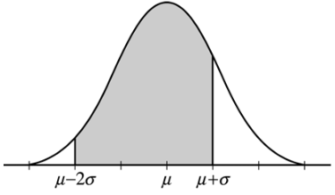

A certain type of remote-control car has a fully charged battery at the time of purchase. The distribution of running times of cars of this type, before they require recharging of the battery for the first time after its period of initial use, is approximately normal with a mean of 80 minutes and a standard deviation of 2.5 minutes. The shaded area in the figure below represents which of the following probabilities?
